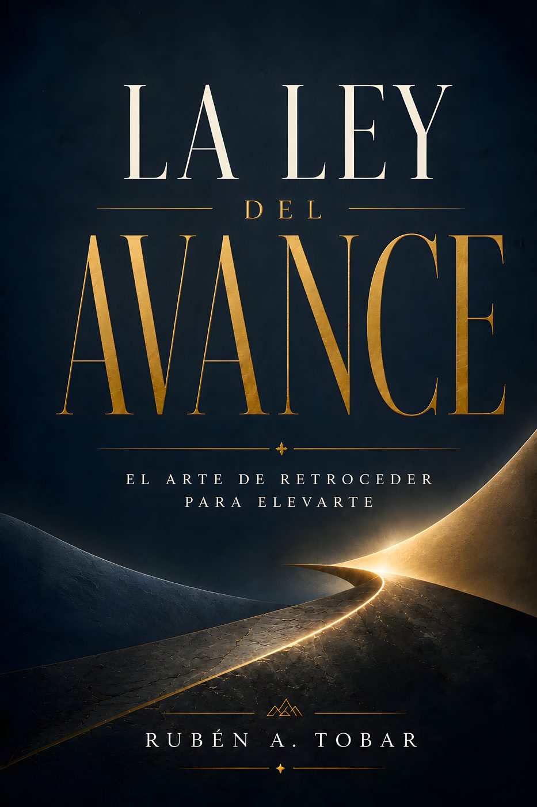

Ejecuta: el arte de ejecutar las ideas
Un marco práctico —Esfuerzo × Concentración × Tiempo = Resultado— para convertir ideas en resultados reales, escrito desde la experiencia de fábrica y una perspectiva latinoamericana de fe.
También en inglés: Execute →La Trampa del Esfuerzo Extremo
La historia de dos compañeros de fábrica que toman caminos opuestos: uno se destruye persiguiendo el esfuerzo sin límite, el otro encuentra el filo entre trabajar duro y trabajar bien.

La Mente Afilada
El poder olvidado de hacer una sola cosa bien, en un mundo que premia hacer de todo un poco.
Despega
Siete hábitos poderosos para impulsar tu vida y tus finanzas, con un protocolo de 90 días para ponerlos en marcha.
Dominio Propio
Domina tus instintos, rompe tus cadenas: el león como metáfora central de los instintos que hay que dominar para alcanzar libertad real.
También en inglés: Self-Mastery →
Tú Eres El Límite
Rompe, avanza, conquista: sobre los límites que nos imponemos a nosotros mismos, con la vasija como imagen central del libro.

La Ley del Avance
El arte de retroceder para elevarte, con la flecha y la semilla como imágenes centrales de por qué el retroceso también es avance.
Viviendo en la Armadura de Dios
Tu protección irrompible, tu ataque final: una lectura de la armadura espiritual de Efesios 6 aplicada a la guerra espiritual del día a día.

La Ventaja Decisiva
Elévate y deja de competir: el método E.L.E.V.A.T.E. para diferenciarte en vez de pelear por el mismo espacio que todos.
También en inglés: The Decisive Advantage →El Núcleo del Cambio
Lo que debe cambiar antes de que todo cambie: sobre las decisiones, las estaciones de la vida y la mayordomía, vistas desde la fe.
La Arquitectura de la Voluntad
El método para crear resultados extraordinarios: la voluntad entendida como un sistema que se construye, cruzando neurociencia y fe.
Aún por escribir
El siguiente proyecto está en marcha. Si quieres enterarte primero cuando esté listo, escríbeme desde la página de contacto.